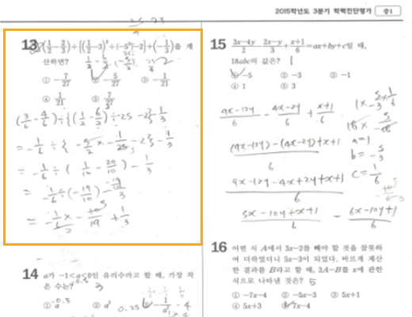
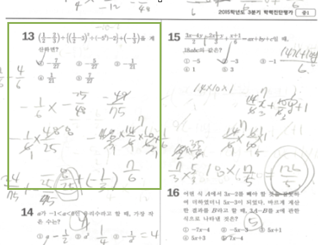
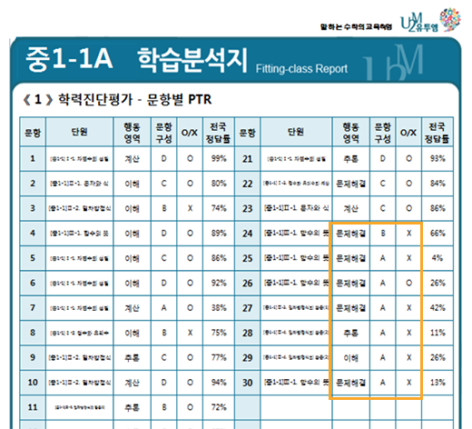
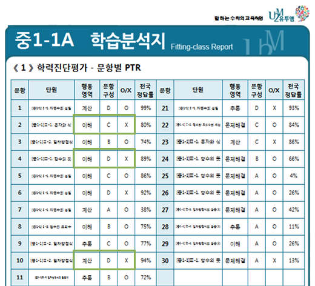
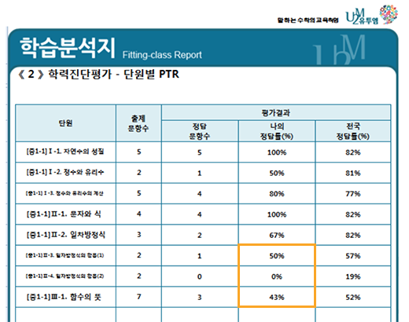
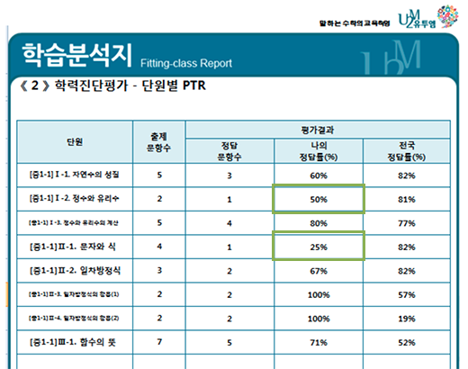
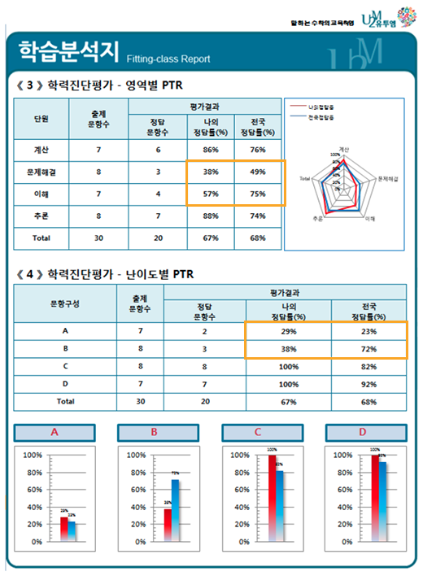
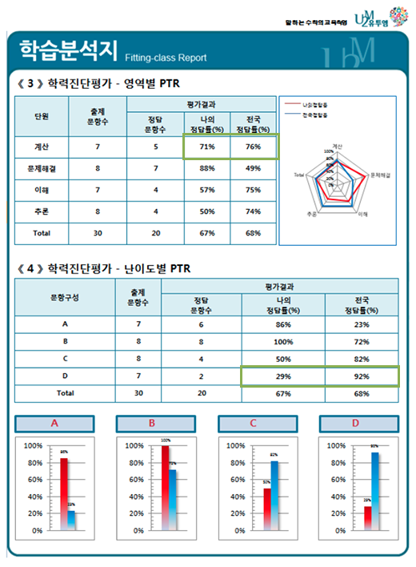

학력진단 평가 결과 분석을 통해 유투엠만의
차별화된 학습 컨설팅을 진행합니다.
|
비교항목
|
중1
A학생
점수 : 70
등급 : B2 |
중1
B학생
점수 : 70
등급 : B2 |
|---|---|---|
|
결과지
|

문제 풀이를 잘 정리함 |

계산과정을 생략하거나 |
|
문항별
|

심화문제에 취약함 |

선행과 심화학습이 진해된 것으로 보임 |
|
단원별
|

활용문제 위주의 3단원에서 많은 오답 |

1, 2단원의 기본 문제와 계산에서 많은 오답 |
|
영역별
|

문제해결과 이해영역의 정답률이 낮음 |

계산 영역이 특히 취약함 |
|
난이도별
|
난이도가 높은 A, B 문항에서 다수의 오답 |
낮이도가 낮은 D문항의 오답이 높은 편 |
|
진단결과
|
학년 과정에 대한 심화학습 진행 |
올림과정+서술형 진행 |